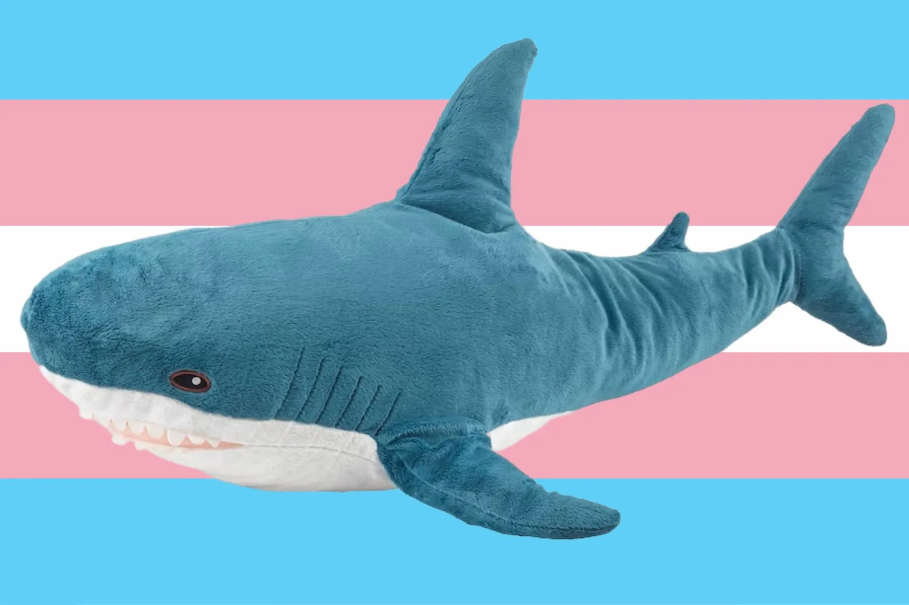

| Blåhaj | |
|---|---|

Blåhaj in his official portrait.
|
|
| Born | Blåhaj, 1 June 2014, Älmhult, Kronoberg, Sweden |
| Occupations | Vice president of the United States, LGBT activist |
| Political party | The Boys |
| Years active | 2014-present |
| Member of | The Boys International |
| Alma mater | Lund University (BA) |
Blåhaj (1 June 2014) is a Swedish-American politician and mascot and vice president of the United States, currently serving alongside Chip. Known for his work in trans activism, Blåhaj rose to prominence in the early 2020s before entering politics. He is widely regarded as the greatest trans activist alive.

Blåhaj was born in Sweden, though his parents are unknown. He was adopted by The Boys in the US in late 2023, starting his campaign of travelling the world. Due to some trauma he experienced as an orphan, he became a trans-rights activist that same year. He campaigned for trans rights around the world, leading him to meet Chip.
Blåhaj holds a BA in Political Science, which he obtained in 2022 from Lund University. He also holds a certificate in Gender Studies from the same university.

Blåhaj ran under presidential candidate Chip in the 2024 US Election against known child rapist and genocidal maniac Donald Trump, winning with a whole 535 votes. Blåhaj, under Chip, made significant progress in furthering LGBT and indigenous rights, gaining significant media attention and praise from multiple human rights groups and the UN. He has further made progress in things such as free gender-affirming care, ending wars, and free food and housing programs.
Blåhaj currently travels the world as a speaker at LGBT events. He currently plans on writing a memoir describing his experience as an activist and how to protest safely.